Visual Test Shell (VTS) is an application for testing the BACnet functionality of various devices used in building automation systems. BACnet is a Data Communication Protocol for Building Automation and Control Networks developed under the auspices of the American Society of Heating, Refrigerating and Air-Conditioning Engineers (ASHRAE). For information on BACnet, see http://www.bacnet.org
VTS is an open source project hosted by http://sourceforge.net/projects/vts/.
VTS 3.6 runs on Windows XP through at least Windows 10.
WinPcap is Copyright (c) 1999 - 2014 NetGroup, Politecnico di Torino (Italy). All rights reserved.
Redistribution and use in source and binary forms, with or without modification, are permitted provided that the following conditions are met:
- Redistributions of source code must retain the above copyright notice, this list of conditions and the following disclaimer.
- Redistributions in binary form must reproduce the above copyright notice, this list of conditions and the following disclaimer in the documentation and/or other materials provided with the distribution.
- Neither the name of the Politecnico di Torino nor the names of its contributors may be used to endorse or promote products derived from this software without specific prior written permission.
THIS SOFTWARE IS PROVIDED BY THE COPYRIGHT HOLDERS AND CONTRIBUTORS "AS IS" AND ANY EXPRESS OR IMPLIED WARRANTIES, INCLUDING, BUT NOT LIMITED TO, THE IMPLIED WARRANTIES OF MERCHANTABILITY AND FITNESS FOR A PARTICULAR PURPOSE ARE DISCLAIMED. IN NO EVENT SHALL THE COPYRIGHT OWNER OR CONTRIBUTORS BE LIABLE FOR ANY DIRECT, INDIRECT, INCIDENTAL, SPECIAL, EXEMPLARY, OR CONSEQUENTIAL DAMAGES (INCLUDING, BUT NOT LIMITED TO, PROCUREMENT OF SUBSTITUTE GOODS OR SERVICES; LOSS OF USE, DATA, OR PROFITS; OR BUSINESS INTERRUPTION) HOWEVER CAUSED AND ON ANY THEORY OF LIABILITY, WHETHER IN CONTRACT, STRICT LIABILITY, OR TORT (INCLUDING NEGLIGENCE OR OTHERWISE) ARISING IN ANY WAY OUT OF THE USE OF THIS SOFTWARE, EVEN IF ADVISED OF THE POSSIBILITY OF SUCH DAMAGE.
VTS uses Microsoft’s MFC. The pre-built version of VTS uses MFC10, which may or may not be installed on your computer. If MFC10 has not been installed on your computer by another application, run the installer, vcredist_x86.exe, from the VTS Zip file. You can also get the latest version of MFC10 from Microsoft’s web site, though it is pretty well hidden.
VTS requires no installation, aside from dependence on WinPcap and MFC10 as described in previous sections. You may run it from the same directory where it was originally extracted from the zip archive. If you move VTS.EXE to a different directory, you must also move the file PTP.DLL to the same directory.
Running VTS is as simple as double clicking on the application (VTS.EXE) or selecting Run from the Start menu and entering C:\VTS\VTS (assuming that you moved VTS.EXE to the directory C:\VTS).
When you run VTS for the first time, a default workspace file named vts3.cfg will be created automatically, as well as a default logfile named vts3.vpk. The workspace file contains all of the VTS configuration data, such as Devices, Ports, Names, etc. The logfile contains the packet data that is captured while running VTS.
Workspace files are updated automatically as the configuration is changed - there is no need to save the workspace. However, there is a selection under the File menu to save the workspace under a new filename for the purpose of creating multiple workspaces. A workspace saved in this manner can be loaded via the File/Workspace/Switch Workspace menu selection. Only one workspace can be loaded at a time. The name of the current workspace is shown in the title bar. When VTS is run, the last workspace that was in use is always reloaded.
Each workspace (.cfg) references one logfile (.vpk), which contains packet data captured during a VTS session. Like workspaces, logfiles are also saved automatically as packet data is generated. A different logfile can be started without creating or loading a new workspace by selecting Edit/Change logfile. This causes the current logfile to be closed, and the user has a choice of creating a new logfile or loading an existing logfile. Once the logfile has been changed in this manner, any new packet data will be appended to the new logfile, and the current workspace will reference the new logfile. Switching workspaces will switch to whatever logfile was last viewed using that workspace.
To send a VTS session to a friend, both the workspace (.cfg) and logfile (.vpk) must be sent.
Configuring VTS involves three steps:
Each of these steps is performed by selecting the appropriate menu item from the Edit menu as shown below.
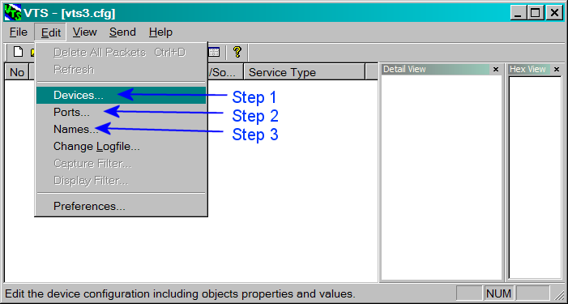
Each of the individual configuration steps is described in the following sections.
This section is for creating Devices and Objects that are hosted within the VTS program. In other words, Devices and Objects created here will exist inside the VTS workstation for the purpose of providing test Devices and Objects that can be accessed from an external BACnet client application that is being tested. If an external client sends ReadProprty or WriteProperty requests directed at the Devices and Objects created here, VTS will automatically respond to those requests.
Note that this section is not for configuring Devices and Objects that reside in the implementation being tested by VTS. That is done by loading an EPICS file while a script window is open.
Right click in the tree area to display a menu for adding Devices or Objects. Select each Device or Object to present some basic properties that can be edited for each Object.
There is no need to click the OK button after each Object is added. Simply keep right clicking within the tree to add more Objects, and then click OK when finished. Clicking the Cancel button will cancel all of the changes that were made since the dialog box was first displayed.
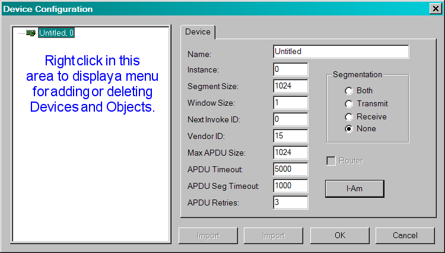
Here is an example showing two Devices with some Objects within each Device. (The standard Properties of each standard Object type are not yet supported.)
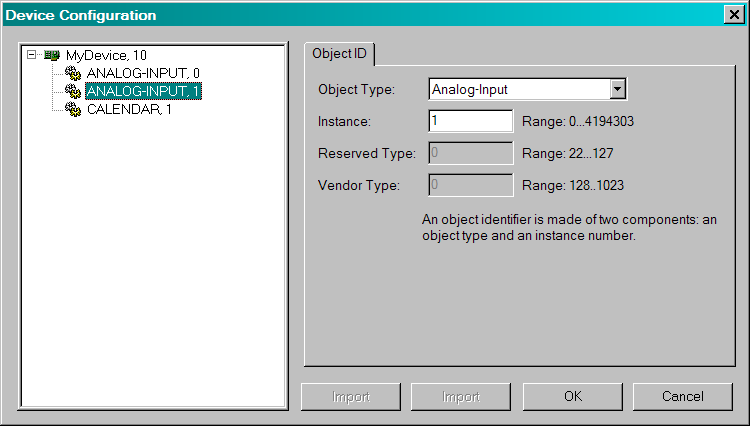
A port is a communications endpoint that sends and receives packets. Some ports are associated with a physical interface such as an Ethernet communications card, and others such as IP ports are associated with a UDP port.
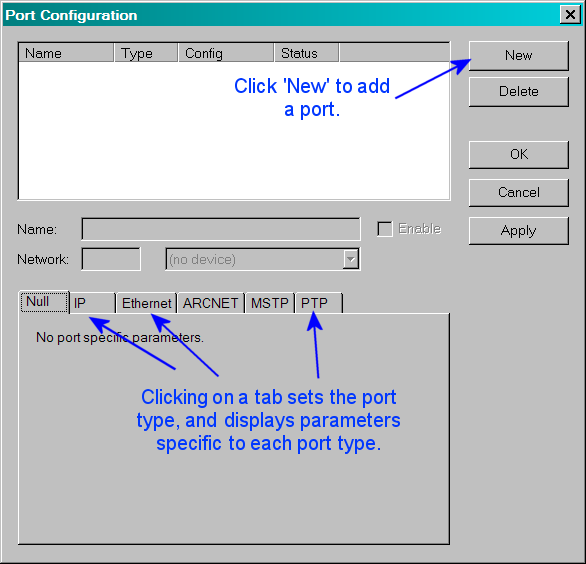
For BACnet/IP ports, the socket 0xBAC0 (or 47808) is the typical socket number.
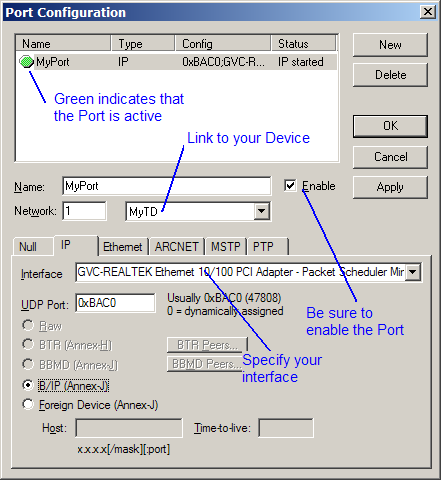
When a port is enabled, it is available for sending and receiving packets, and the status indicator will be green. If the status indicator is red, there is some problem enabling the port and a description will appear in the status column.
Ports are not actually created or enabled until the OK or Apply button is clicked. (This is different than previous releases of VTS, which created the port while it was being configured).
Note: Associating more than one port to the same Device will cause VTS to function as a BACnet Router between those ports, which is usually unexpected behavior and might cause some scripts to malfunction.
A name is a shortcut for an address. Names are used in the source and destination address areas of ports, as well as the SNET and DNET portion of the BACnet network layer. Select Names from the Edit menu and you will be presented with the following dialog box:
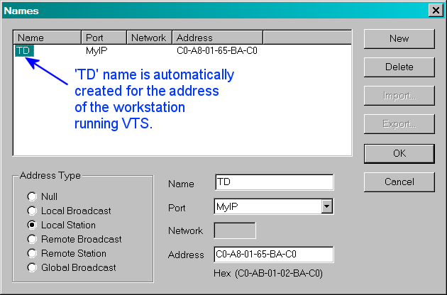
Notice that there is already a name TD (common abbreviation for Test Device) defined and given the address of the port. If this was an Ethernet port, TD would be the Ethernet address of the port.
Click New, change the name to IUT, and then enter the address of the implementation under test. The IUT name has special meaning in VTS because scripts will automatically SEND and EXPECT messages from whatever address is associated with the IUT name as long as an explicit destination address is not specified in the script.
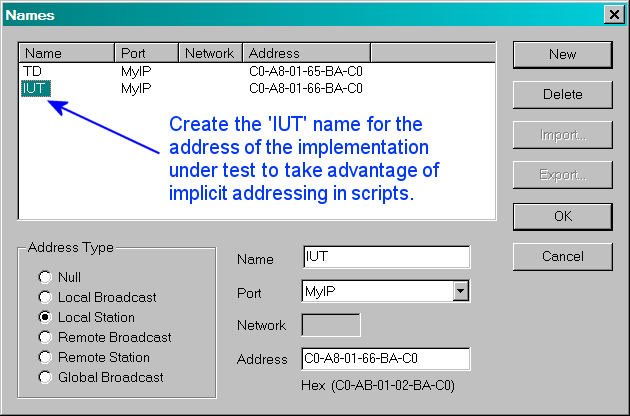
Click New, change the name to LB, and click on the Local Broadcast radio button.
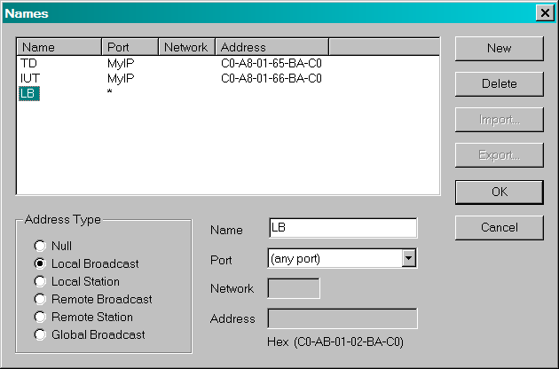
The LB name will now represent a local broadcast address for any port. For an Ethernet port, this is the address FF:FF:FF:FF:FF:FF, for an IP port it is the address 255.255.255.255:47808. Click on the OK button to close the dialog box.
The most basic function of VTS is to send and receive packets and decode them. Click on the Send menu and you will see a menu that looks like this:
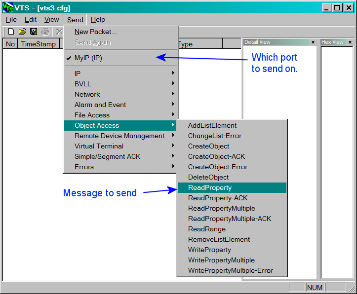
The MyIP name that is selected is the port created in Step 6. There is only one enabled port, so it is selected by default, and below the port is a hierarchical menu of families of types of packets. The BVLL menu has BACnet/IP specific packets such as Register-Foreign-Device. The Network menu contains BACnet networking packets such as Who-Is-Router-To-Network. The other menus are common groups of application layer messages.
Select Register-Foreign-Device from the BVLL menu. You will be presented with the following dialog box:
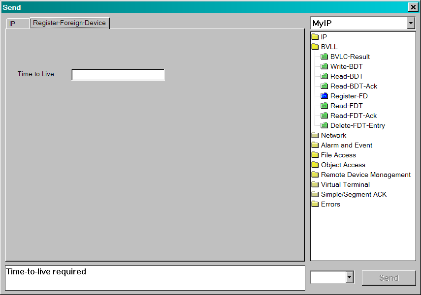
The central feature of the dialog box is a set of tabbed panels, one tab for each layer in the packet. The Register-Foreign-Device message has only one parameter, the Time-To-Live. This is a required parameter, as indicated by the error message in the text area below the panels.
Enter a time-to-live in seconds.
When a parameter in the packet contains valid information, other parameters in other panels are verified to contain correct content.
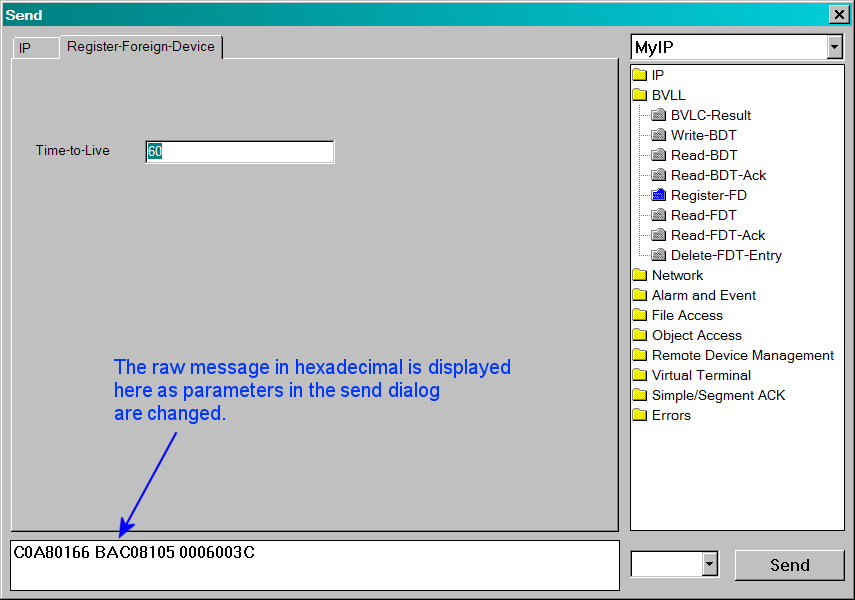
Enter the destination address for the packet by selecting the IP tab. The destination address may be provided by entering an IP address in the text area, or selecting a name from the drop down menu. In this case, a default address was selected automatically because the 'IUT' name was defined in step 7.
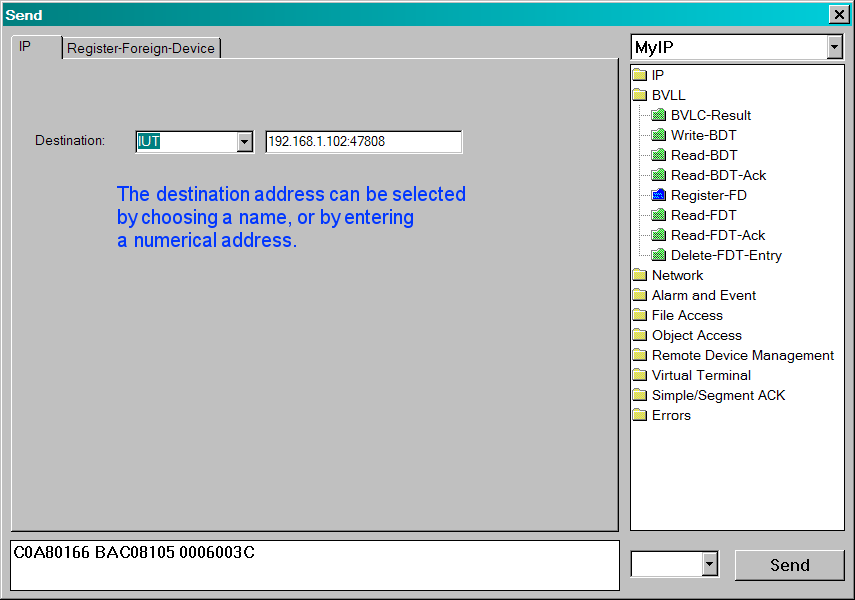
Click on the Send button.
When the packet is well formed, the encoded content will appear in the text area below the panels. This may be edited before sending to test how a device responds to malformed packets. In the session window you will see an indication of a packet that has been transmitted.
Close the Send dialog box.
The Send dialog box is designed to be non-modal, so it is not closed automatically. The packet contents can be modified and sent again.
The session window contains three panes. The summary view on the left has one line per packet and provides general information such as the packet number, time it arrived, source and destination addresses, and a brief description of the packet. The detail view in the upper right contains a complete decoding of the packet contents. The hex view in the lower window displays the binary content of the packet using hexadecimal notation.
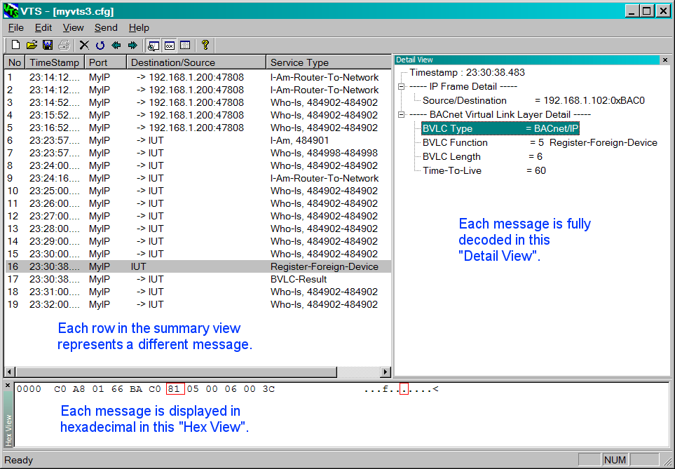
The three views are synchronized so selecting a detail row will highlight the hex encoding of that specific portion of the packet with a red box.
The Detail and Hex views can be rearranged within the VTS window by dragging their title bars to the desired new location. The dividers between the views can also be moved to resize the adjacent views at the same time.
For the next example, send out a global broadcast Who-Is packet.
Select Who-Is from the Remote Device Management submenu. You will be presented with the following dialog box.
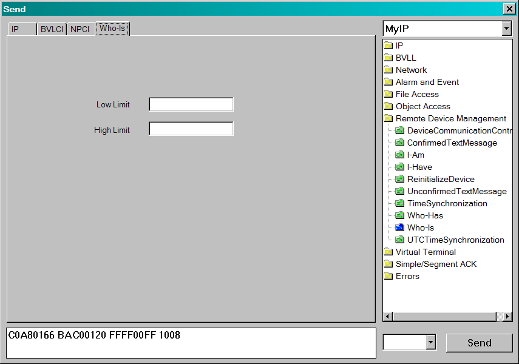
The device instance low limit and high limit are optional parameters in the message. By leaving both fields empty, the request will indicate that all devices must respond.
Select the NPCI tab.
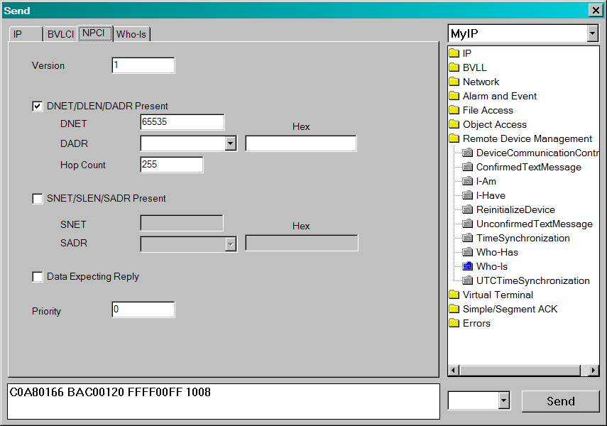
A Who-Is request is usually sent out as a global broadcast, so the DNET is present and has the value 65535.
Select the BVLCI tab.
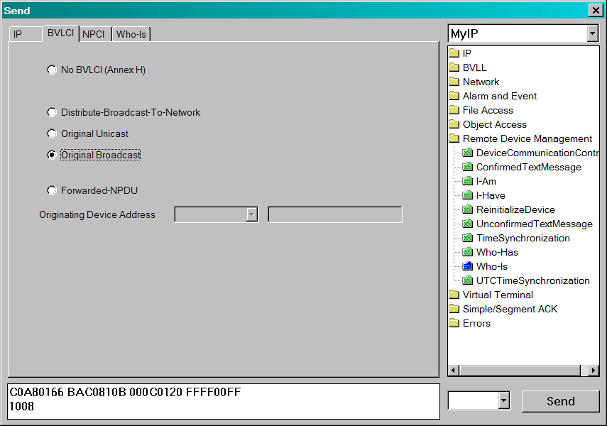
Assuming the PC is connected to a BACnet/IP network, this message should be sent out as an original broadcast message.
Select the IP tab.
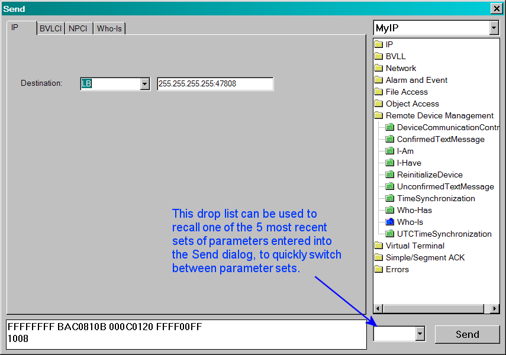
Select the LB name for the destination address so that the WhoIs request is sent as a local broadcast. Notice that the correct broadcast address is filled in in teh numerical address edit box.
Click Send, then close the dialog box.
Here is a sample captured from a test network. Note that two Devices answered the Who-Is request with the I-Am service.
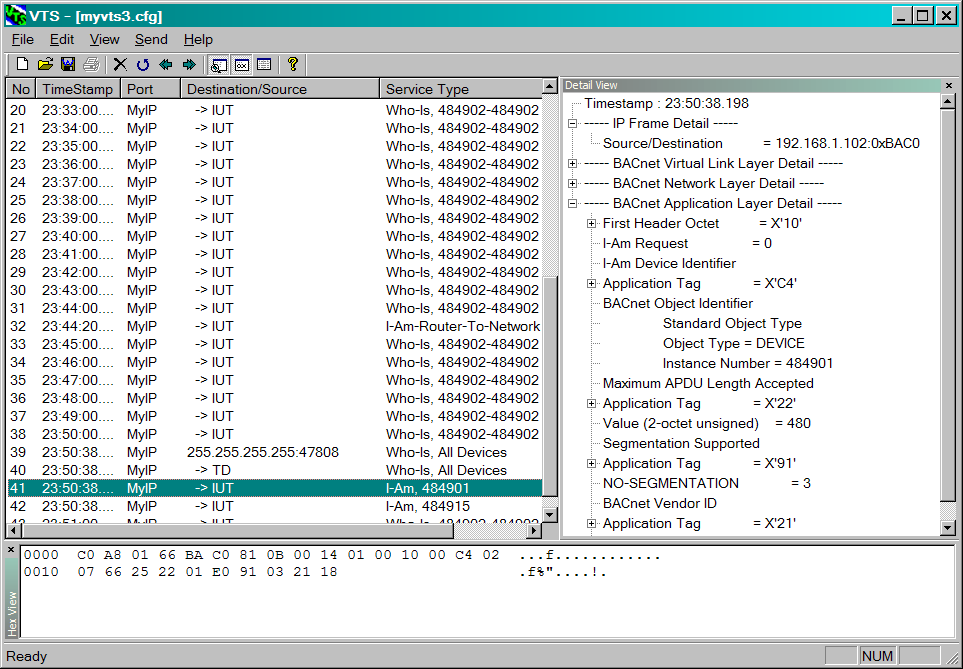
Cleaned up support of EPICS references in Expect statements.
Added function key shortcuts. New support for device objects. Fixed about box to generate a version string at run time. Added support for the following objects: averaging, multi-state-value, and trendlog; and all associated properties, EXCEPT: The Log_Buffer property of the TrendLog object. These changes enable VTS to handle the presence of the new objects in the EPICS. They also allow the user to perform Object Access services (in the interacterive mode) on devices containing these objects. Cleaned up IP address issues in scripting. DA and SA parameters may now be IP addresses vs. octet strings.
Script support for device object. Includes changes that were made as a result of the Manchester plug-fest, including significant improvements in application layer scripting. It also includes bug fixes in the internal router code, along with buffer overflow bug fixes. Cleaned up a decoding bug with DNET numbers (being treated as a signed integer and then extended to 32 bits).
Added ReadRange support, but only for the Send window - no support in scripts yet. Fixed a TimeSynch encoding bug.
Added the Send UTCTimeSynch service. Minor improvements in the Send ReadRange interface. Added a document to the release that provides instruction on how to use VTS 3 for testing BACnet devices.
The PTP data link layer has been added in this release. It launches a separate process and displays transmit and receive logs that are specific to PTP. There has been very little testing on this feature, so please use it with caution. If any bugs are discovered in the PTP implementation, please report them here.
User was unable to see char string entered for passwords in DCC & Charstring was apparently not sent to device in WP/WPM. This problem was actually caused by the method for entering char strings in edit boxes. Single or double quotes were required within the edit box to properly input the desired text for passwords, messages, names, etc.. Strings were using the script parser to identify strings but this is not necessary in the UI. Edit fields requiring strings throughout VTS have been altered accept what is entered. If quotes are present, the quotes are assumed to be part of the text and sent to the device in the relavent BACnet message. This change effects the following areas:
User can now select a device from the Send menu, or the port drop down menu. There is a new Device page which is looking for a destination address (type, network, and address) and the outgoing APDU will be set to that address. The device object will take care of segmentation, retries, etc, as necessary. Properly configuring a built-in device object and binding it to a port will be part of a separate document.
Comparisons for status flags in RP/M, WP/M work properly now. This problem was caused by reading one byte passed the encoded PDU for the bitstring. The comparison failed because the tag was being interpreted as part of the incoming bitstring.
Comparing the returned UTC_Offset value in a script to EPICS failed because the data type used in VTS's internal structures for UTC_Offset was a float instead of int. This has been corrected by changing it's internal type to 'ssint' and processing accordingly.
'Property value not known' was returned correctly when comparing device-address-binding to EPICS when the value was '?'. It returned this error incorrectly when the EPICS value was defined as empty (). It now compares the valid empty condition. This error would also show up on other non-primitive data types whose value could be empty ().
Case 1E has been fixed by creating a BACnet type class structure that will facilitate easier type comparisons. Cases 1F and 1G are errors in the script parser that don't deal with array indices. (See below)
Reworked implementation for comparing data in EXPECT statements from values retrieved from EPICS and specified in scripts. Any AL value being compared to EPICS data was using a method to match encoded streams. This scheme would fail in cases where numbers used different encoding sizes, different type comparisons that are legal (such as float vs. null in priority arrays) and many other. More detailed comparisons were impossible with this method because VTS had no way of determining the type of data and could not determine the proper end of the stream, among other reasons.
To implement type specific comparisons for all possible BACnet data types, including arrays, lists and complex structures, the c++ class representation for BACnet data types has been extended. These classes serve as a foundation that allows the use of more tools (MFC, polymorphism, etc.) to facilitate feature additions and more flexibility where BACnet data type are concerned. Type specific matching methods, display methods, decoding, assignment and comparative operators are now available.
Using these classes to perform decoding and comparisons in the heart of EXPECT statements required the need for a retreval method to access the internal EPICS structures and convert them to BACnet type classes. The immediate result of these changes can be seen in more meaningful text in test fail results. In addition, comparisons can now be made to the following data types:
Notes for future enhancements:
The following type comparisons are not implemented yet:
- List of read access specs.
- Action commands and arrays of action commands.
- VT classes.
- Event parameters.
- Session keys.
- Time Synch recipients.
- Recipients.
- List of Recipients.
- Array of exceptions schedule events.
- Array of weekly schedules.
- List of object property references.
- Setpoint reference.
- List of active VT sessions.
Adding support for these remaining types is simply a matter of constructing the object from the EPICS internal structures and decoding the object from a stream. The mechanisms for performing the comparisons are already in place. The development of support for proprietary objects in EPICS and scripts will be assisted by BACnet classes as well.
Other benefits of this work will be seen later as the EPICS store gradually converts to store data internally in these classes. The greatest benefit to this foundation work will be seen as data becomes extractable from Complex Acks either compared, tested or even assigned to variables of complex types in scripts. Additionally, script parsing will be effected by these changes once all of the data types are supported and proper scanning methods for each will allow a single source code source for the creation of such objects.
Most of the SEND methods have been altered to retrieve EPICS data using these classes as well as creation and encoding of send streams from these object types. Specifically, the following classes have been added or altered:
Case 1F (test for size of array [0]) and case 1G (test of single index value in array [int]) have also been fixed. Indexing into array properties is now supported in the following manner:
{property[int]} - or - {property[var]}
The index must either be a literal integer or a variable which resolves to an integer.
This problem was caused during an attempt to reallocate an APDU buffer to accomodate a larger size APDU. The problem has been fixed. VTS no longer crashes. Proper segmentation should occur.
This feature was added to allow a script to test for the correct tagging in an EXPECT statement without regard to the actual data value. Expressions within an EXPECT statement now support the don't care operation. Equations and values can be specified as don't care in one of the following ways:
Unsigned = 1, ? Bitstring = 2, ? Real = 3, ?
In the example above, the EXPECT statement will fail if the packet does not contain a context 1 unsigned integer, followed by a context 2 bitstring, followed by a context 3 real, but the actual values of each of the data values is discarded. This can prove useful if one or more of the parameters expected cannot be pre-determined, such as a time stamp. If the expected data is application tagged instead of context tagged, then the following is also valid:
Unsigned = ? Bitstring = ? Real = ?
'?' can also be used for always matching addresses returned for EXPECT statements when applied to:
'?' is not valid for AL type data where the datatype is determined by the EPICS reference on the right side of the expression. '?' can only be used if the left side of the expression specifies the datatype.
Unsigned ?= 20 Bitstring ?= {F, T} AL ?= {EPICSReference}
Use of the don't care operator '?=' within an EXPECT statement will cause the data stream to be parsed correctly according to the data type but the value will not be tested. This operator works on primitive types (Unsigned ?= 20) as well as the AL data. The value on the right of the operator must be valid for the datatype. EPICS references for AL expressions must be valid in order to determine the data stream type.
The '?=' operator is more flexible than the '?' data matching method, but the '?' is provided for clarity in simpler expressions. For example:
Unsigned = ?
is easier to understand than:
Unsigned ?= 9
where the '9' is superfluous. But both formats accomplish the same thing.
Several changes have taken place in the handling of the primitive Date and Time data types. The listing here does not include other improvements that were made concerning script variables (reported later in this text). Unless noted, both the Date and Time data type handling were affected equally by these corrections and enhancements.
Date = tag, VARDate = VARTime = tag, VARTime = VARDate = VAR (where VAR = tag, [value])Time = VAR (where VAR = tag, [value])
Date = tag, dow, n/n/n
With this syntax, parsing the day of week and/or the tag was difficult due to data values for complex types being mixed with parameter in an expression. These problems have been cleaned up by adding the following requirements to data types whose ASCII format requires multiple values. These kinds of values are considered complex data types and the Date and Time types fall into this category. Other values (lists, calendar entries, and other not-yet implemented value specifiers) also fall into this category.
Text representations of complex data types now require the use of brackets '[]' to separate their data from other parameters. The brackets are required even if no other parameters in an expression are present. The Date and Time text representations now take the following form:
Date = [dow, mm/dd/yy] -or-Date = [dow, mm-dd-yy]Time = [hh:mm:ss.HH]
Any and all values can be substituted with the don't care value ?. For example: [12:?:44.?]. Enclosing these complex representations inside brackets gives clarity to expressions with multiple parameters as in the case of tag specifications:
Date = tag, [TUE, 11/4/02] -or-VAR = [TUE, 11/4/02]Date = tag, VAR
Bracketing this compound data can be nested as in the case of the text representation for a DateTime and DateRange:
DateTime = [DATE, TIME] = [[dow, mm/dd/yy], [hh:mm:ss]]
DateRange = [DATE1, DATE2] = [[dow, mm/dd/yy], [dow, mm/dd/yy]]
DateTime and DateRange are not considered primitive types and currently can only be used when referencing EPICS data and so a text representation for these types has not been needed as yet. The addition of variable assignments tends to usher in the requirement for these representations. How text representations are interpreted as certain data types requires a solution, as referenced in the following section on variable assignments.
One final note on the bracketing of compound data is that, like quotes for strings, the brackets are only necessary in situations where other types of data may be read as well. Brackets are not necessary when date and time values are specified inside edit fields within the VTS user interface. They are, however, necessary in scripts and subsequently, like quotes, necessary inside script parameter data, since this data is partially parsed.
Support for stuffing incoming data elements into script variables has been added throughout the EXPECT statement, except where noted. Syntax for the new operator '>>' in assignments take the following form:
Keyword >> VAR -or-Keyword >> tag, VAR
The above assignments will place a text representation of the incoming data given by the keyword into the script parameter VAR. The assignment that contains the 'tag' parameter is used when the encoded data is expected to be context tagged instead of application tagged. The VAR parameter MUST be previously created in the SETUP section of the script or an error will be reported.
The first form assumes no tag is present and the data is removed from the stream and placed in the VAR. If a tag is expected (as found in the incoming packet), and error will be reported. The second form allows the testing of a context tag first and then an assignment into the variable. The tag will NOT be present in the new assignment. The contents of VAR will NOT be interpreted prior to assignment. This is relevant because it is possible to have statements:
VAR = tag, valueKeyword = VAR ... which resolves to:Keyword = tag, value ... and the tag is tested.
Thus, it would be conceivable to allow:
VAR = tag, VAR2Keyword = VAR ... which might resolve to:Keyword = tag, VAR2 ... and finally place the decoded value in the VAR2 parameter. But this is not supported.
The data will be placed in script parameters in a text format that can be re-decoded for use in comparisons in other expressions. Each text format will be determined by the appropriate type. The following assignments are legal for these data types:
Boolean >> VAR ;Assigns: Set or Reset
Unsigned >> VAR ;Assigns: Number
Integer >> VAR ;Assigns: Number
Real >> VAR ;Assigns: Real
Double >> VAR ;Assigns: Real
OctetString >> VAR ;Assigns: X'nnnnnn'
BitString >> VAR ;Assigns: B'0102010'
CharacterString >> VAR ;Assigns: "Char"
Date >> VAR ;Assigns: [dow, mm/dd/yy]
Time >> VAR ;Assigns: [hh:mm:ss.HH]
Enumerated >> VAR ;Assigns: Number or KEYWORD if enumeration table is known (as in the case of Boolean). Support for this can be incremental.
Object >> VAR
-or-
Object >> tag, VAR
Expects and Object Identifier and assigns 'OBJECT-TYPE, Number' to VAR. In other words, this type of assignment will place the object type keyword AND the object instance number inside the script parameter value. (Note that the object really falls in the compound data class and would best be served by bracketing the type and instance together [type, instance]. This was NOT implemented because too many scripts would require alteration).
Property >> tag, VAR
Expects a context tagged Property Identifier and assigns it to VAR. The property keyword (i.e. PRESENT_VALUE) will be placed inside the variable. This will be properly decoded and compared in other equality expressions in the current or upcoming EXPECT statements.
(OpeningTag and ClosingTag do not support the assignment operator).
VERSION >> VAR ; Assigns: Number
PRIORITY >> VAR ; Assigns: Number
DER >> VAR ; Assigns: Boolean (Set or Reset)
DNET >> VAR ; Assigns: Number
SNET >> VAR ; Assigns: Number
HOPCOUNT >> VAR ; Assigns: Number
NEGATIVEACK >> VAR ; Assigns: Boolean
SERVER >> VAR ; Assigns: Boolean
INVOKEID >> VAR ; Assigns: Number
ABORTREASON >> VAR ; Assigns: EnumeratedKeyword (SEGMENTATION-NOT-SUPPORTED)
REJECTREASON >> VAR ; Assigns: EnumeratedKeyword (INCONSISTENT-PARAMETERS)
WINDOWSIZE >> VAR ; Assigns: Number
SEQUENCENR >> VAR ; Assigns: Number
SETACCEPTED >> VAR ; Assigns: Boolean
MOREFOLLOWS >> VAR ; Assigns: Boolean
ERRORCHOICE >> VAR ; Assigns: EnumeratedKeyword ()
SEGMESSAGE >> VAR ; Assigns: Boolean
SERVICE >> VAR ; Assigns: EnumeratedKeyword (ACKNOWLEDGEALARM)
PDU >> VAR ; Assigns: EnumeratedKeyword (CONFIRMED-REQUEST)
MAXSIZE >> VAR
Assigns: Enumeration of ("50", "128", "206", "480", "1024", "1476") or Number if less than 16. If VAR now contains a number, it will be converted to code if VAR is then used in a SEND.
NETWORK >> VAR
Assigns: CharacterString for currently defined port (in quotes).
SADR >> VAR
DADR >> VAR
Both of these assign a CharacterString for the defined name of the device if known, OctetString if not.
An error was discovered and corrected concerning the specification of DNET/DADR and SNET/SADR pairs in the script. The test for whether or not these pairs were present in the received packet was being determined by whether or not the DNET/DADR keywords were supplied in the script. This was causing the script to have hard-coded expectations about whether the IUT was behind a router or not.
BVLCI >> VAR
Assigns: BVLCI type, i.e. READ-BROADCAST-DISTRIBUTION-TABLE-ACK {,host/net:port}*
MESSAGE >> VAR, ?, ?, ?
Assigns the network layer message type to VAR.
A special note about these two keywords: MESSAGE and BVLCI. These keywords have parameters that follow which dictate how the values are extracted from the received packet. As VTS is currently coded, assignment of all of the parameters into a VAR is impossible because the number of parameters that are specified in an equality expression determines what data to extract. For example: Assignments of
BVLCI >> VAR
... where the BVLCI received is READ-BROADCAST-DISTRIBUTION-TABLE-ACK {,host/net:port}*
...would fail because the number of entries into the table is matched and determined by the number of parameters given in the expression. Although simpler assignments are possible with other kinds of BLVCI types (BVLC-RESULT, rslt), it is not clear whether a variable assignment of the entire set of parameters or just the BLVCI type would be most useful further in the script. For this reason, the current implementation supports the assignment of the type ONLY into the script variable, using a syntax such as:
BVLCI >> VAR, ?, ?, ?
The contents of VAR will have the enumerated keyword READ-BROADCAST-DISTRIBUTION-TABLE-ACK and no further parameters. The use of the don't care value is required for types that have a variable number of arguments so the receive packet can be properly decoded. Looking into how this could be implemented in such a way as to not depend on the parameters supplied in the script to properly decode the received packet is probably warranted.
All of the parameters must be specified, even in simple cases such as:
BVLCI >> VAR, rslt
...where the type is BVLC-RESULT. After the VAR is stuffed with the BLVCI type, 'rslt' will be compared to the received result as if the equals operator was used.
The MESSAGE keyword for determining network layer message types:
MESSAGE >> VAR, ?, ?, ?
... where the type is I-AM-ROUTER-TO-NETWORK would require the specification of all of the networks the sender is a router to (or specified as don't care values). VAR would be assigned with the network message enumerated keyword (i.e. I-AM-ROUTER-TO-NETWORK). An alternate way of handling this in future releases might be to allow the assignment of multiple values into multiple variables with a single assignment expression. Like this:
MESSAGE >> VAR1, VAR2, VAR3, VAR4, etc.
-or-
MESSAGE >> I-AM-ROUTER-TO-NETWORK, VAR, ?, ?
But both of these forms are currently unsupported.
- 618172: Conditional flow control for scripts
Support for the IF statement has been added. The statement is a pre-processor form used to control compilation during the "Syntax Check" function. The expression in the conditional will not be evaluated at script execution. Syntax for the conditional compilation will take the form:
IF (expression {[OR | AND] expression} )...{ELSEIF (expression {[OR | AND] expression} )}...{ELSE}...ENDIFThe pre-processor will evaluate the expressions contained within the perenthesis following the 'IF' keyword before scanning the next line. If the expression evaluates to true, all of the following lines up to the ENDIF keyword (or ELSEIF or ELSE, if supplied) will be included in the compile. Multiple expressions can be evaluated. Evaluation will occur left to right until a false condition is detected. Parenthesis for logical grouping is not supported.
The ELSEIF and ELSE clauses are optional (indicated by '{}'). Only one ELSE clause can be present within an IF block but multiple ELSEIF clauses can exist. Each of the keywords must appear at the first element on a line. Once a true condition in any clause is found, any remaining ELSEIF or ELSE clauses will not be evaluated and the syntax for these clauses will not be checked.
The expressions will take the following form:
VAR/Value operator VAR/ValueWhere VAR/Value is either a script variable name that has already been assigned in the SETUP section or a literal value. Any expression referencing a script variable that has not been defined will evaluate as if the variable is an enumeration keyword. All literals or variables must evaluate to one of the following types:
Boolean (TRUE, T, FALSE, F, Y, YES, N, NO) {=, !=}Enumeration (NAME) {=, !=}Integer (-1, 0, 1, etc.) {=, !=, <, <=, >, >=}Unsigned (0, 1, 2) {=, !=, <, <=, >, >=}CharacterString ("Twinkies") {=, !=, <, <=, >,>=}Note that use of Real, Double, Null, BitString, OctetString, Date, Time, ObjectIdentifier, DeviceIdentifier, PropertyIdentifier type are not supported in IF expressions at the present time. The assignment operator '>>' and don't care operator '?=' are unsupported in IF expressions. Use of the don't care value '?' is supported and will always match whatever type and value it is compared to, regardless of the operator used. i.e. VAR != ?, where VAR = 20 or any value will be true.
Enumeration types will be supported. All unquoted names will be treated as an enumeration type and a conversion to caps and '_' to '-' will be performed prior to evaluation. It is not necessary to supply a valid enumeration name because all names that do not resolve to parameters will be treated like an enumeration.
VAR = I-AM-ROUTER-TO-NETWORKVAR = BOGUS-NOT-FOUND-ENUMERATIONParameters that have either been changed by the user or changed by a previous script execution (item shows blue in parameter list) will use the new value for IF comparisons. A 'reset' must be performed to have the IF conditional use the script assigned value for comparison.
IFs can be nested. Since the IF statement is used for conditional compilation, the IF block can span multiple script statements, occur within a SEND or EXPECT statement, or straddle the beginning and/or end of SEND or EXPECT statements.
Added CHECK statement to script commands that will popup a modal dialog box and allow the user to PASS or FAIL the script test. Script execution is halted while the dialog is up. Syntax for the CHECK statement is as follows:
CHECK "Title" ( "Text line" ... "Text line")
Usage details can be found in a usage document attached to the MAKE item, 44153.
Added MAKE statement to script commands. It will pop up a dialog with a supplied message and allow the user to alter a condition that generates a receive packet. When followed by an EXPECT statement, script execution continues with indefinately extended EXPECT timers. Syntax is exactly like the CHECK statement with the exception of the keyword MAKE.
MAKE "Title" ( "Text line" ... "Text line")
Usage details can be found in the document attached to the sourceforge item.
Now the send page such as "CSendNPCI", "CSendBVLCI", "CSendReadProp", "CSendReadPropACK", "CSendReadPropMult", "CSendReadPropMultACK", "CsendWriteProp", "CSendWritePropMult", "CSendWritePropMultError" can remember the values of the past 5 packets.
And when tester sends an request with a particular object and property in one of send window: "CSendReadPropMult", "CSendReadPropMultACK" and "CsendWritePropMult" windows, the others will have the same settings.
We have used other way to fix this bug without type identifier in the EPICS. The value of present-value will be parsed according to value of list_of_object_property_reference. Now VTS3 can parse the schedule object defined in EPICS correctly. However we found although we have fixed this bug, there are some problems in handling packet expected, we modified the struct of schedule object, and now VTS3 can handle three kinds of data type: Binary value, unsigned word and float.
Now VTS3 can support read-all test. A menu item "read all property" has been added into menu "script", after loading EPICS successfully, this menu will be enabled. When you click this menu, VTS prompts you to input network number and destination address, after then VTS3 create a temp VTS3 script in a new script document, you can save this script file. If you don't save this file, VTS3 will delete this temp file. Note: At present, VTS3 only supports read all test over BACnet/IP.
Now VTS3 can support more consistency check function. EPICS consistency check is in accordance with BACnet standard 1995, have finished the following items consistency check.:
Now summary window has been changed from Scroll view to List view. This list view contains the following columns: number, Ssource/Destination, Service Type.
To improve the usability of the left (summary) pane, the following enhancements were made:
Now if the last packet in the session is selected and a new packet is sent or received, VTS3 can continue to keep the scroll value pegged to the bottom of the list, scrolling the current contents up, and make the new incoming packet the selected packet. Note: when the selected packet isn't the last packet, VTS3 will not make a change to select the last packet when a new packet is sent or received.
The primary goal of this release was to increase the stability of VTS.
- MSI, MSO, MSV, AI, AO, AV, BI, BO, EE,LOOP, BV, BV- TR object support already existed, but it was the only one.
Syntax for including files:
INCLUDE "filename.vts"
Usage of the INCLUDE directive follows these rules:
There are a few things to note when files are included:
SNET = NONE, SADR = NONE, DNET = NONE, DADR = NONE.
So now if the SNET/SADR or DNET/DADR values are specified in the script, the values must exist in the received message. Conversely, if they are specified in the script with the NONE value, the src/dst addresses must NOT be present in the received packet.
The capture and display filters are a list of ACCEPT or REJECT filter elements, each of which can specify a variety of source and destination addresses, as well as "function groups" that match the function groups in the Send menu.
Addresses are "deep parsed", so you can filter on anything to and/or from a remote network because the filter will look into the NPCI for routing information. Ack's to a confirmed service (both simple acks and complex acks) are paired up with the function group.
Note that this does not change the behavior of the application, only what is saved in the packet database and/or shown in the window. For this version, script generated "packets" are not subject to filtering.
(The up and down arrow buttons to change the order of the filter elements are not working).
Proprietary Property Identifiers are now encoded and decoded correctly and shown as numerical Property Identifiers, but the value of the proprietary Property will not be decoded correctly if it is a constructed data type.
Property Identifiers are no longer restricted to the first 123 enumerations. Property Identifiers up to enumeration 168 (profile-name) are now decoded. Property Identifiers can now be up to enumeration 4194303. (This was limited to two octets in prior versions). Enumerations higher than 168 are shown as numerical Property Identifiers.
· Feature request 544511: More information was added to each row of the summary view in the sniffer. This feature needs to be reviewed to see if the most useful data was added for each message type.
· Fixed the following bugs:
EXPECT NOT
or
EXPECT BEFORE xxx NOT
Example:
EXPECT BEFORE 200 NOT ( NETWORK = "Untitled" SA = IUT_IP DER = FALSE BVLCI = ORIGINAL-UNICAST-NPDU PDU = ComplexAck Service = ReadProperty Object = 0, OBJECT1 Property = 1, PRESENT-VALUE OpenTag 3 REAL = LOWVAL CloseTag 3)
If VTS receives the specified packet in the given time then this test fails.
IF (timeRemaining = 0) ASSIGN FAILEDENDIF
‹wait statement› ::= WAIT ‹timer value›
The TD shall pause the amount of time specified by the ‹timer value› before proceeding to the next test step.
The ‹timer value› shall be one of the timers specified in 6.3 or as otherwise specified.
‹timer value› ::= ‹constant› | ‹variable› | '{' ‹Fail Time› '}' ‹Fail Time› ::= Notification Fail Time | Internal Processing Fail Time | Minimum ON/OFF Time | Schedule Evaluation Fail Time | External Command Fail Time | Program Object State Change Fail Time | Acknowledgement Fail Time
IF '(' '{'‹service›', ' EXECUTE | INITIATE'}' '=' TRUE | FALSE')'
SEND AFTER '{'‹Fail Time›'}' ‹Fail Time› ::= Notification Fail Time | Internal Processing Fail Time | Minimum ON/OFF Time | Schedule Evaluation Fail Time | External Command Fail Time | Program Object State Change Fail Time | Acknowledgement Fail Time
Example:
SEND AFTER {Internal Processing Fail Time} ( ... )
{Max_APDU_Length_Accepted}{Max_Segments_Accepted}
Examples:
MAXSEGS = {Max_Segments_Accepted} MAXRESP = {Max_APDU_Length_Accepted}
IF ({binary-value, 1, OUT-OF-SERVICE} = FALSE) OBJECT1 = binary-value, 1ELSE OBJECT1 = binary-value, 2ENDIF OBJECT = binary-value, 1IF ({OBJECT, OUT-OF-SERVICE} = FALSE) OBJECT1 = binary-value, 2ELSE OBJECT1 = binary-value, 3ENDIF
EXPECT ( ... PDU = Confirmed-Request ... invokeID = ? ...)
Does not work as a don't care operation on the invokeID, but this does ...
EXPECT ( ... PDU = Confirmed-Request ... invokeID ?= 0 ...)
However, VTS has been changed so that the first format now also works as a don't care operation on the invokeID in an EXPECT statement.
CHECK "Title" (IF (VAR = 1) "Text1" ELSE "Text2" ENDIF)
But the following syntax is allowed:
CHECK "Title" ( IF (VAR = 1) "Text1" ELSE "Text2" ENDIF)
The SEND and EXPECT statements do not support the first syntax either. Since the work-around is simple, and since other statements must be changed if the CHECK statement was changed, there are no plans to fix this bug.
· Added MS/TP datalink support through the American Auto-Matrix NB-Link device. This is a device that connects to a TCP/IP network and provides an MS/TP connection for VTS. In other words, VTS maintains a TCP/IP connection to the NB-Link, which allows VTS to send and receive MS/TP data frames to the MS/TP network connected to the NB-Link. The NB-Link functions as a master node on the MS/TP network, handling the MS/TP token passing independently of VTS.
VTS supports multiple NB-Link devices, once for each MS/TP network. The MS/TP network can be located remotely, perhaps even across the Internet. If there is not a TCP/IP network available, the NB-Link can be connected to the PC running VTS by using an Ethernet crossover cable between the PC and the NB-Link. An inexpensive Ethernet hub or switch will also work.
The NB-Link is configured from within VTS by adding an MS/TP port in the ports dialog. The first step is to add an MS/TP Port by selecting Edit/Ports... from the menu, clicking the "New" button, and selecting the MSTP tab and entering the MS/TP parameters for this port. These parameters determine the MS/TP characteristics of the NB-Link. For example:
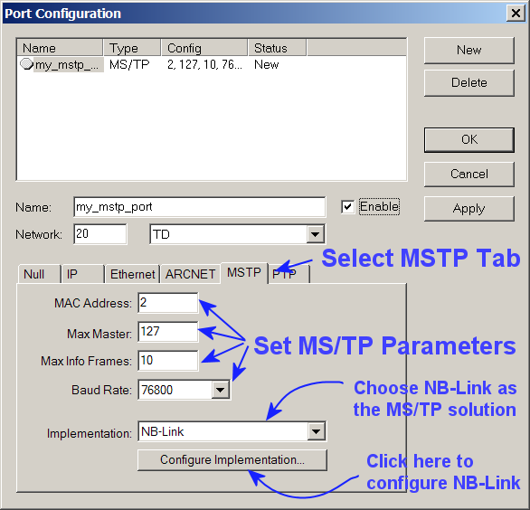
The next step is to click the "Configure Implementation" button to set the parameters that determine how the NB-Link communicates with VTS. Most of these parameters are related to the TCP/IP communication employed between VTS and the NB-Link, such as the IP address parameters of the NB-Link. This dialog is used to actually set these parameters in the NB-Link, not to match parameters that have already previously been set by some other configuration tool. In other words, VTS knows how to configure the NB-Link, even prior to setting the NB-Link's IP address - and in fact, this dialog is how the NB-Link's IP address is set. (How this functions with multiple NB-Link devices attached has not been tested.)
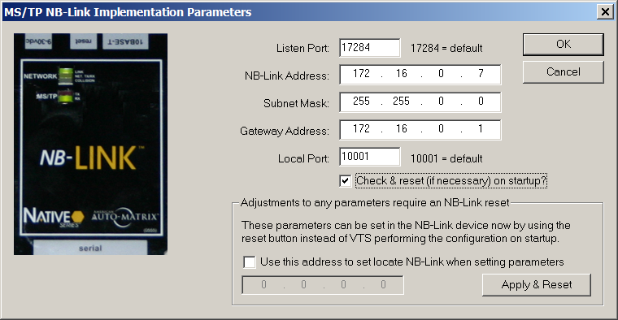
Here is the purchasing information for the American Auto-Matrix NB-Link:
The part number is
NB-LINK-HW-KT.
The price is $1078.50 (US) each.
Purchase by credit card by contacting
Carla Beiter, American Auto-Matrix inside sales.
InsideSales@aamatrix.com
877-226-4822
The BACnet Testing Laboratories (BTL) has not tested the
American Auto-Matrix NB-Link for conformance to the BACnet standard,
nor does the BTL endorse the NB-Link as a product.
· There is a new window visible on the main screen that will become a visual representation of the loaded EPICS, but this feature is not yet functional.
1. BACnetAction
2. BACnetActionCommand
3. BACnetActionList
4. BACnetBinaryPV
5. BACnetClientCOV
6. BACnetCOVSubscription
7. BACnetDailySchedule
8. BACnetDaysOfWeek
9. BACnetDeviceStatus
10.BACnetDeviceObjectPropertyReference
11.BACnetDeviceObjectReference
12.BACnetEngineeringUnits
13.BACnetEventParameter
14.BACnetEventState
15.BACnetEventTransitionBits
16.BACnetEventType
17.BACnetFileAccessMethod
18.BACnetLifeSafetyMode
19.BACnetLifeSafetyOperation
20.BACnetLifeSafetyState
21.BACnetLimitEnable
22.BACnetLogRecord
23.BACnetLogStatus
24.BACnetMaintenance
25.BACnetNotifyType
26.BACnetObjectPropertyReference
27.BACnetObjectPropertyValue
28.BACnetObjectType
29.BACnetObectTypesSupported
30.BACnetPolarity
31.BACnetPriorityArray
32.BACnetPriorityValue
33.BACnetProgramError
34.BACnetProgramRequest
35.BACnetProgramState
36.BACnetPropertyIdentifier
37.BACnetPropertyReference
38.BACnetPropertyStates
39.BACnetPropertyValue
40.BACnetRecipient
41.BACnetRecipientProcess
42.BACnetReliability
43.BACnetResultFlags
44.BACnetSegmentation
45.BACnetServicesSupported
46.BACnetSessionKey
47.BACnetSetpointReference
48.BACnetSilenceState
49.BACnetSpecialEvent
50.BACnetStatusFlags
51.BACnetTimeStamp
52.BACnetTimeValue
53.BACnetVTClass
54.BACnetVTSession
55.BACnetWeekNDay
56.ListOfBACnetDestination
57.ListOfBACnetReadAccessResult
58.ListOfBACnetReadAccessSpecification
This release enhances the EPICS functionality of VTS.
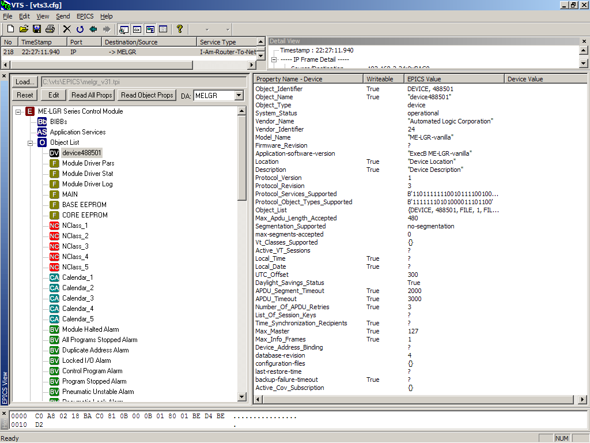
This release enhances the Sniffer summary view
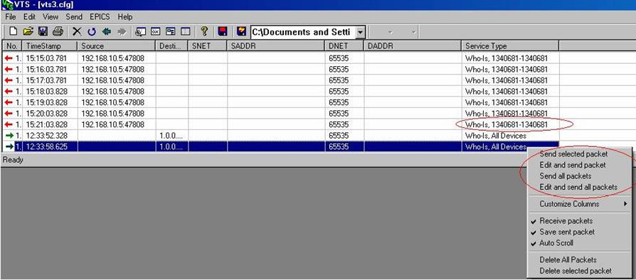
This release also fixes the following bugs and feature requests in Source Forge:
|
ID |
Summary |
|
1069018 |
BACnetFailTimes are uninitialized |
|
1067771 |
Edit|Names|New with no EPICS crashes |
|
1021196 |
Decoding of SubscribeCOV-Requests |
|
1006602 |
Not all CharacterSets in DetailView supported |
|
895879 |
Decoding of character strings |
|
799851 |
Script line numbers off by one in VTS messages |
|
485728 |
EPICS parser - proprietary handling |
|
544511 |
Expand sniffer summary information |
|
544324 |
Support proprietary Objects/Properties |
|
508589 |
(Add) Single Click buttons and hot keys |
|
444238 |
Make Send window a client window |
The most significant changes for this release are the changes to the EPICS parsing and viewing feature. Most BACnet objects and properties are now supported. Please see the sample EPICS that is now included with the source package for expected formats for all properties. There are still some properties that are not supported. See the list at the end of this document for details.
Another change that has been made is the addition of the Backup and Restore built-in tests. These tests have been implemented but have not been certified by the BTL as correct. Please test these on your devices and let me know of any problems you may encounter.
Other bugs have been completed to enhance the stability of VTS. Please read through the list of bugs fixed for details.
Bugs Fixed for this release:
|
ID |
Assigned |
Priority |
Summary |
Category |
|
1275709 |
ltribble |
5 |
Resizable column issue on sniffer |
None |
|
1261344 |
nobody |
5 |
Incorrect calculation in FindNPDUStartPos |
VTS 3.x |
|
1260152 |
mgaller |
1 |
Modified hex display in Send window |
VTS 3.x |
|
1260136 |
mgaller |
1 |
Added 'Close' button to Send window |
VTS 3.x |
|
1259984 |
mgaller |
5 |
Variables used out of scope |
VTS 3.x |
|
1256856 |
ltribble |
7 |
crash on epics object selection |
EPICS |
|
1254028 |
nobody |
5 |
multiple bugs |
VTS 3.x |
|
1244867 |
ltribble |
7 |
BACnetDateTime comparison |
VTS 3.x |
|
1190196 |
xxsy |
5 |
New objects not recognized in EPICS file |
EPICS |
|
1167286 |
nobody |
4 |
Send Abort dialog needs server/client |
VTS 3.x |
|
1155180 |
mgaller |
9 |
Read range by time day of week field not present in UI. |
VTS 3.x |
|
1149504 |
xxsy |
5 |
EPICS parses local-date property incorrectly |
EPICS |
|
1149490 |
ltribble |
7 |
EPICS parser doesn't accept empty active-cov-subscr property |
EPICS |
|
1056200 |
ltribble |
9 |
VTS 3.4.7 EPICS Loader findings |
EPICS |
|
1031010 |
xxsy |
5 |
EPICS loader does not support Life Safety Objects |
EPICS |
|
1031009 |
xxsy |
9 |
EPICS loader is confused about complex parameter values |
EPICS |
|
1031004 |
ltribble |
7 |
EPICS does not support DeviceObjectPropertyReference |
EPICS |
|
1029342 |
xxsy |
9 |
VTS 3.4.7 crashes if EPICS is loaded |
EPICS |
|
974907 |
nobody |
5 |
VTS 3.4.4 uses incorrect context tag in GetEnrollmentSummary |
None |
|
787623 |
xxsy |
9 |
EPICS parser doesn't handle new property format |
EPICS |
Known Issues related to EPICS or found while fixing various EPICS issues:
Properties that are currently not supported in the EPICS parser:
event-parameters: BACnetEventParameter
list-of-group-members: SEQ OF ReadAccessSpecification
group::present-value: SEQ OF ReadAccessResult
exception-schedule: SEQ OF BACnetSpecialEvent (Array)
action: SEQUENCE OF BACnetActionList, (ARRAY)
schedule-default: ABSTRACT-SYNTAX
Problems with the EPICS Viewer:
SessionKeys does not show in the EPICS View
activeVTSessions does not show in the EPICS view
weekly-schedule does not show in the EPICS view
recipient-list does not show in the EPICS view
Encoding problems:
setpoint-reference does not encode correctly from EPICS to send dialog
Sniffer issues with decoding:
zone-members does not correctly decode in the details view of the sniffer
accepted-modes of lifesafety do not decode correctly in the details view of the sniffer
Released October 21, 2006
Items fixed:
|
ID |
Summary |
Notes |
|
617212 |
VTS 3 interprets reals as floats |
Need to test to see if this still exists in 3.4.9. Appears to be working in 3.4.9. Tested both send dialog and detailed view and the RPM 1Q script. |
|
960274 |
ReadRange byTime new tag |
Fixed in 3.4.9 just need to test and verify. Tested and working. |
|
965935 |
Get Event Information |
Fixed in 3.4.9 just need to test and verify. Tested and working. |
|
960275 |
By Time needs DOW |
Fixed in 3.4.9 just need to test and verify. Tested and working. |
|
960273 |
Read Range by sequence (new tag) |
Fixed in 3.4.9 just need to test and verify. Tested and working. |
|
1540412 |
Missing DATABASE_REVISION |
In show_bac_ANY in bacfuncs.h |
|
1538594 |
Missing ‘,’ in BACnetERRORCode |
List of errorcodes missing ‘,’ after item #42. Fixed. |
|
1501806 |
(same as 1021192) |
Duplicate of above bug. Fixed by MAG 6/6/2006 |
|
1486033 |
Destination Dlg missing Process ID |
Added to dialog by MAG 6/6/2006 |
|
1461695 |
Crashes if 256 or larger |
Problem was in BACSN015.cpp and the limited size of the SummaryLine. Added a truncate section before the result is copied into the SummaryLine. |
|
1452771 |
Vendor Object types can not be specified the Object ID dialg |
Problem introduced in 3.4.9. |
|
1440025 |
mstp port set-up crashes |
Fixes were provided in this bug and have been applied and tested. Files changed: VTSDoc.cpp, VTSPortmstpdialog.cpp, and WinMstp.cpp (I added an initialization to var to help closing down of mstp port) |
|
1431140 |
LifeSafetyPointObject mustn’t device-type |
Device-type is an optional property. The consistency check had it as required. I changed this to optional for both life safety objects. Also changed ‘reliability’ from optional to required. |
|
1431111 |
Property Keyword “accepted-mode” missing |
Accepted-mode keyword was missing from scriptkeywords.cpp. Added this property. |
|
1400472 |
Scripting problem when trying to use EPICS properties as script parameter |
Fix was in ScriptExecutor.cpp SendALData. Changed tlist[indx] references to tlist[0].
|
|
1380510 |
Crash on certain logfile when scrolling to line 256. |
Problem was a bad MSTP packet, that the NL parsing was bailing on. The fix was to change the NL parsing of the SADR and DADR to bail if the length encountered is > 7 and return “BAD07”. VTSPacket.cpp. |
|
1264041 |
Property Name expected |
Various property names are not recognized in scripting. Changed ScriptKeywords.cpp to include new properties. |
|
1256830 |
Trend-Log object identifier not recognized |
Changed ScriptKeywords.cpp to change TRENDLOG to TREND-LOG. |
|
1025962 |
ReadRange mishandles empty log file |
Fixed for next release. Problem was in BACSN015.cpp and found while testing the previous read range items. |
|
1021192 |
Names Dlg instable |
Problem was a focus null pointer. Fixed by MAG 6/6/2006 |
|
1021191 |
Unknown property names |
Same as previous. Changed ScriptKeywords.cpp to include new properties |
|
806427 |
Encoding error in WMP |
Problem in BACSN015.cpp. Implicit context tag is causing the problem. We need to know the property ahead of time. Changed code to pass the pid down to the ANY method. |
|
787641 |
Add keystrokes to Edit menu |
Fixed in. vts.rc |
|
779138 |
Change tab order of Object ID dialog |
Fixed in. vts.rc |
|
779132 |
Change tab order of ANY dialog |
Fixed in. vts.rc |
|
1565943 |
Delete Key in script editor causes delete of all packets |
Fixed. Change the RC file accelerators for VDB to use D not VK_DELETE. Easy fix so that DEL in script works correctly. Just means have to do Alt-D to delete packets when on the main window.
|
Released November 4, 2007
The most significant change in this release is that VTS now requires WinPCap 4.0.1 to be installed to use the Ethernet port. Please update your WinPCap version prior to installing this new version of VTS.
Here are the list of bugs that were corrected in this release:
|
ID |
Summary |
Notes |
|
1608485 |
The pif_get_byte get macro is supplied bad data |
Fix supplied in bug: #define pif_get_byte(n) (( pif_offset + (n) >= pif_end_offset) ? 0: ((unsigned char)(*(msg_origin + pif_offset + (n))))) |
|
1606849 |
Pif_show_nbytes_hex was overrunning buffer |
Fix supplied in bug by Buddy Lott |
|
1606846 |
Show_bac_real was overrunning a buffer |
Fix supplied in bug by Buddy Lott |
|
1590577 |
Missing parenthesis in if statement |
Fix supplied in bug by vacqueb |
|
1542242 |
FR-SubscribeCOVProperty Support |
This was fixed by JCI when they submitted changes for backup/restore (included in 3.4.10a) |
|
1277522 |
Update to latest version of WinPCap |
|
|
1621505 |
Update Ethernet code for WinPCap 3.1 |
|
|
1559494 |
VTS3 does not work with WinPCap 3.1 |
|
|
1663967 |
BACnet Destination dialog: No field for processIdentifier |
|
|
1704377 |
VS2005 compatibility |
Although the project was not changed and we do not officially support VS2005, the changes recommended here were integrated into the source code. |
|
1371954 |
no headings or info displayed in message screen |
Changes were made to hopefully fix this again. |
|
1405181 |
VTS sniffer no longer displays service summary |
Same as above |
|
1340429 |
Incorrect protocol parsing |
Not really a bug |
Released July 14, 2008
This release is a maintenance release and corrects many of the known issues within VTS.
Summary of fixes:
· The backup and restore tests in VTS were enhanced to provide a way to modify the 'backup-failure-timeout'. They also now allow for adding a delay between the time the ReinitializeDevice startBackup acknowledge is received and the time VTS starts reading the configuration-files property. There was a problem with backup/restore if not using IP datalink. This has been fixed. We also fixed the restore of record access type files. There was a problem with the AtomicWriteFile decoding and display. This has been fixed.
· New Event Types: UnsignedRange, Extended, and Change of LifeSafety were implemented for the notification parameters send dialog.
· Updated the objects types, error codes, and property identifiers available in dialog boxes.
· The EPICS parsing was updated to allow max APDU size of 1476. EPICS consistency was updated to include the new Addendum L requirements and BIBBs. The EPICS consistency for AE-N-I-B was corrected. Parsing for the TimeValue pairs in Weekly_Schedule, Exception_Schedule, and Calendar's Date_List was fixed.
· The VTS Device object was improved to respond to most required properties in the device now. The ObjectTypesSupported and the Object_List properties are created based on the objects defined in the Devices dialog box. Several new services are also supported: ReinitializeDevice, GetEventInformation. VTS also now claims to support ReadPropertyMultiple but will reject any request of this type. This was done for testing client devices to ensure they can fallback to ReadProperty if the ReadPropertyMultiple request fails.
· The string encodings used by VTS in the scripting have been modified to better match the EPICS specifications in 135.1.
· The auto-generated ReadAllProperties script output was modified to correct syntax errors in the script it produces.
Here is the list of bugs that were corrected in this release:
|
ID |
Summary |
Notes |
|
1921977 |
VTS3.5 BACN015.cpp line 9126~9129 |
|
|
1912929 |
EXPECT should list SNET/SADR instead of DNET/DADR |
|
|
1841379 |
GetEnrollmentSummary Priority-Filter 2-octet MaxPriority. |
|
|
1841067 |
Restore Algorithm problem with Create-ObjeCT |
|
|
1799670 |
Create Object dialog does not allow Object ID as specifier |
|
|
1615874 |
Vendor type field is not editable |
|
|
1592190 |
EPICS consistency check appears to be wrong |
|
|
1554997 |
VTS crashes on receipt of unknown character set |
|
|
1477101 |
Sending UCS-2 character string VTS goes away |
|
|
1447133 |
Only instance no. 0 available for the object identifier |
|
|
1431122 |
ConfirmedEventNotification: B.NotificationParam not complete |
|
|
1254440 |
Sending BVLL causes crash |
|
|
994901 |
R3 test block: Unable to send Router-Busy-To-Network-nodnet |
|
|
974844 |
List of DNET optional for Router-Busy-to-Network |
|
|
895890 |
decoding errors |
|
|
895882 |
handling of Error-PDUs with error-choice=ReadRange |
|
|
855084 |
PropertyID incorrect for Vendor specific objectypes |
|
|
829159 |
ObjType and ObjID field grayed out in CreateObject dialog |
|
|
EPICS load for Maximum APDU size should allow anywhere from 50 to 1476 however for some reason only allows 1470. |
||
|
VTS does not handle entry of BitString of format (T, '?', F, '?'). See ScriptExecutor.cpp line 10469. |
||
|
VTS needs new workstation BIBBs added so that EPICS can be parsed. The consistency check of EPICS must also be updated. |
||
|
VTS decoding of OctetString when only 2 bytes required to encode the length of the data in the tag. This bug was introduced in the latest release of VTS and only affects the sniffer details display and the export functionality. |
||
|
Decoding the Address Binding property. Appears to be a problem when decoding a MAC length of 0. |
||
|
EPICS Consistency check for AE-N-I-B does not recognize the NC object. |
||
|
SCALE property of Accumulator is not decoded correctly. |
||
|
Accumulator not a choice in the ObjectId dialog box. |
||
|
The object id dialog box needs to get its list of object types from the list in code not from the list in the dialog (.rc) |
Released March 7, 2009
This release is a maintenance release and corrects many of the known issues within VTS. This release also includes new objects and properties that were introduced in 135-2008.
Summary of fixes:
· Fixed encoding of ObjectIdentifier value from WriteProperty dialog
· Fixed property Id references in detail view by adding missing reference for 199.
· Fixed date-list parsing for date range
· Added CalendarEntry Encode to BACnetAnyValue
· Fixed dialog display for PriorityArray to be of type Unsigned instead of Integer
· Fixed array and list handling in the SendWriteProperty dialog
· Changed Windows title on Send dialogs to include service name
· Updated error codes, property Ids, and objects to 135-2008 standard. This included EPICS handling, send dialog lists, and detail view decoding. New Objects: Load Control, Event Log, Trend Log Multiple, Structured View, Access Door. New Properties: 193 - 235. New Error: 83, New Units: 142 - 192, 115 - 121.
· Fixed BUFFER_READY event parameter type parsing in the EPICS
· Removed proprietary objects from database list of objects. EPICS can still define the proprietary objects
· Fixed Weekly_Schedule parsing from EPICS when it contained more than 1 timeValue pair
· Fixed recordAccess backup and restore
· Updated code and sample EPICS to include new BIBBs and consistency checks as defined in Addendum L
· Fixed encoding of TimeStampArray.
· Added Options tab to Device dialog to allow VTS to be configured to support any or all of the following: AlarmSummary, EventInformation, EventSummary. VTS can also be configured to send 0 to n alarms in the response. Note that these are dummy alarms and do not actually exist in the server. These settings are not saved when VTS is closed.
· Added vertical scrollbar to progress dialog of backup and restore
· Fixed Time entry on send dialogs to decode correctly
· Fixed display of BitStrings in EPICS view. The display was backwards.
· Fixed display of UTC_OFFSET, VENDOR_IDENTIFIER, and OBJECT_TYPES_SUPPORTED in details view per reported bug.
· Updated WeekNDay usage to include ODD and EVEN (13 or 14)
· Fixed detail view display of extended length tags in the detail view
· Fixed detail view display of ReadRange-ACK log-datum when log-buffer contains 'failure' items
· Fixed encoding and decoding of the Action property from the Group object
· Removed the requirement for VTS to answer if DNET is not present that the SNET must match the local network number. Not sure why this was here.
· Added support for responding to ReadProperty for Object_Identifier in VTS
· Updated VTS handling of BVLC decoding
· Changed the auto script creation of ReadAllProperty to not include the InvokeID. VTS will supply a unique InvokeID during execution of the script.
· Removed old code from EPICS handling for conformance codes
Here is the list of bugs that were corrected in this release:
|
ID |
Summary |
Notes |
|
2619696 |
Unsupported units which are declared to be supported |
|
|
2186060 |
Extended length not decoded properly |
|
|
2186050 |
Protocol_Object_types_Supported not decoded properly |
|
|
2186726 |
Parameters in test statement out of order |
|
|
2042783 |
Property enumeration only valid up to 198 |
|
|
2186055 |
Commands out of order for UTC offset and Vendor ID |
|
|
2664362 |
VT-Close-Error |
close tag was incorrect |
|
957739 |
GetEnrollmentSummary service tacks on garbage at the end |
|
|
831839 |
RPM dialog displays proprietary properties incorrectly |
Released October 26, 2009
This release is a maintenance release and corrects several known issues within VTS. This release also includes a new built in tests. The new built in test are 'Inconsistent Parameters Tests' and implement the 135.1-13.4.3, 135.1-13.4.4, and 135.1-13.4.5 tests which were hard to run manually using the existing VTS Send dialogs.
Summary of fixes:
|
· ReadAllProperties script did not include the InvokeID or in previous versions always included an InvokeID=1. Fixed this to auto-increment the invoke id while creating the script. |
|
· Date and Time decoding for Scripting was fixed |
|
· Fixed spelling on some messages coming from the Backup and Restore test procedures. |
|
· Added check to skip tests for 'any' password if a password is required by the IUT. |
|
· Implemented the 'Inconsistent Parameter Tests' as built in tests in VTS. (13.4.3, 13.4.4, 13.4.5) |
|
· Fixed infinite loop reading EPICS if EPICS file missing closing '}' bracket. |
Here is the list of bugs that were corrected in this release:
|
ID |
Summary |
Notes |
|
2849022 |
decoding BACnetActionList |
Released May 30, 2010
This release is a maintenance release and corrects several known issues within VTS.
Summary of fixes:
|
· Rewrote much of the sniffer, to simplify the coding of new messages and datatypes |
|
· Revised the sniffer detail view to indent items enclosed in paired tags (similar to WireShark) |
|
· Completed/fixed segmentation and network support in scripting |
|
· Changed IP code to use the appropriate subnet broadcast rather than hard-coded /24 |
|
· Removed some string-length restrictions in the EPICS reader |
|
· Added template insertion and find/replace to the script editor |
|
· Made it possible to stop a running script entirely, and possible to close a running script without crashing VTS |
|
· Started a “Survival Guide” to help people start using VTS |
|
· Script Cleanup: Submission from Buddy Lott (ID 1704394 and 1704507) |
|
· Script cleanup to use generic “DA” rather than specifying BVLL etc. This allows scripts to be reused on different networks simply by changing Name or config values. It also allows script messages to be segmented. (Thanks to my buddies grep and sed for this effort…) |
|
· Script cleanup to replaced some AL=hex-string with current encoding for bitstrings etc. that were formerly not encodable |
|
· Modified EPICS Consistency check to correct the DM-ADM-A and DM-ANM-A requirements. |
Here is the list of bugs that were corrected in this release:
|
ID |
Summary |
Notes |
|
1592644 |
Scripting does not like Accumulator object identifiers |
|
|
2979777 |
Netmask for B/IP is hardcoded |
|
|
2415662 |
Array bounds exceeded |
Released January 30, 2011
This release is a maintenance release and corrects several known issues within VTS.
Summary of fixes:
|
· Corrected the list of properties added by the real Appendix j, and their associated strings. |
|
· Fixed some of the template types used in CreateCommonProperty(). |
|
· Increased the object_name allocation in generic_object from 32 to 64 chars. |
|
· Filled out a few more icons for the EPICS tree view. |
|
· Replace CTime in Date/Time encoders with SYSTEMTIME/FILETIME: CTime starts at 1970, BACnet at 1900. |
|
· Correct and clean up time and date comparisons and use of * and ? fields |
|
· Use %g for all floating point output.Accept INF, 1.#INF0, NAN, 1.#QNAN etc. for floating point input |
|
· Avoid crash if filters are defined and packet file is missing or empty. |
|
· Eliminate memory leak of CFileExecptions at end of file |
|
· Extend "any" keyword:- save or load from variable ot EPICS- compare |
|
· Add SafeCopy and SafeAppend, add maxlengths to avoid buffer overflows on long string data |
|
· Eliminated CheckEPICSCons dialog, which has been obsolete for some time. This data is shown in the EPICS View pane |
|
· CR 3010449. Use GetTempPath to get appropriate location for EPICS error temporary file |
|
· Replace unsafe char* parameter in BACnet Encode(char*) with Encode(CString&) |
|
· eliminate heap crash due to lack of a copy constructor in WPM dialog (as invoked from EPICS viewer. Did you know it could do that?) |
|
· remove "const int" defs for sizeof various classes. Not used, and scary to think how they might be... |
|
· various small cleanup (sorry, I waited too long to check in, and things got intertwined) |
|
· Scripting uses hashes of keywords, including object-type, property-ids etc. The precomputed values were several revisions behind. |
|
· Changed to COMPUTE the hash tables for object-types, property-ID, abort and reject reason, services - the enumerations that are expected to change most frequently |
|
· Eliminate stPropIDs - use the StringTable version instead to reduce maintenance |
|
· Eliminate unused tables from StringTables.cpp |
|
· Make case and punctuation of strings in StringTables.cpp match 135-2008 |
|
· Add reserved and extension counts to StringTable, to allow eventual replacement of the redundant etables |
|
· Change "log-enable" and "LOG_ENABLE" to "enable" and "ENABLE" per 135-2004b-5 |
|
· Rewrote much of the sniffer, to simplify the coding of new messages and datatypes |
|
· Revised the sniffer detail view to indent items enclosed in paired tags (similar to WireShark) |
|
· Completed/fixed segmentation and network support in scripting |
|
· Changed IP code to use the appropriate subnet broadcast rather than hard-coded /24 |
|
· Removed some string-length restrictions in the EPICS reader |
|
· Added template insertion and find/replace to the script editor |
|
· Made it possible to stop a running script entirely, and possible to close a running script without crashing VTS |
|
· Started a “Survival Guide” to help people start using VTS |
|
· Script Cleanup: Submission from Buddy Lott (ID 1704394 and 1704507) |
|
· Script cleanup to use generic “DA” rather than specifying BVLL etc. This allows scripts to be reused on different networks simply by changing Name or config values. It also allows script messages to be segmented. (Thanks to my buddies grep and sed for this effort…) |
|
· Script cleanup to replaced some AL=hex-string with current encoding for bitstrings etc. that were formerly not encodable |
|
· Modified EPICS Consistency check to correct the DM-ADM-A and DM-ANM-A requirements. |
Here is the list of bugs that were corrected in this release:
|
ID |
Summary |
Notes |
|
3163632 |
Units enumerations above 120 incorrectly decoded |
|
|
3156501 |
ReadPropertyMultiple-ACK displayed wrong in details view |
|
|
3094189 |
Crash on BVLL functions |
|
|
3073740 |
How to configure any complex property value for VTS |
|
|
3046835 |
VTS crashes when editing bit string values |
|
|
3063918 |
Still a problem with "VTS does not display in a Wind" |
|
|
3010449 |
EPICS consistency errors showing as msg box not in view |
|
|
3074176 |
Image for how to configure complex property value in VTS |
|
|
1592195 |
"File too large to load" message when "Read All Properties" run |
Released July 9 2014
Changes in this release
Summary of changes with svn commit numbers:
| 960 |
Version 3.6.2 (release) - Add vendor name string up to 763 - Specify correct enum table for LIMIT_ENABLE property in property tables (EPICS) - Update release instructions - Add a negative integer test case (UTC offset) to allTestEpics.tpi |
| 959 | Add missing .vcsproj, .vcproj, and .dsp files for ProperTable |
| 958 |
Continue work on property tables and EPICS parsing - arrange propdescriptor and allTestEpics.tpi into same property order as 135-2012 - add global-group (most properties) - continue moving DUDTOOL conversion code from property-based to ParseType-based, eliminating much object-specific code |
| 957 | Add ProperTable utility: source reformatter for propdescriptor and similar tables |
| 956 | Select a default Port for InconsistentParsExecutor dialog |
| 955 |
VTS server objects: Fix encoding problem for default name property (had 500 bytes of junk after it). Gussy up server object/property UI a bit. |
| 954 | Move primitive tag #defines to VTS.h and USE THEM |
| 953 |
Work on EPICS parsing and display - move common data to generic_object, eliminating a lot of object-type-specific code - add (some) new properties to the property tables - add firstVersion to property tables to account for new properties (such as alarm stuff) - correct errors in the property tables - clean up EPICS parsing, add utility functions for ease of use |
| 952 | Fix leak of detail tree |
| 951 |
Update BACnetStringTable::EnumValue to accept raw integer as well as enum string, proprietary-xxx-NNN etc. Update comments on BACnetPropertyIdentifier showing at least some protocol-revision of introduction. |
| 950 | Update history for 3.6.1, and remove Microsoft Word tags (Word 2010 seems to generate extra files, and HTML just isn't that hard) |
| 949 | Update resource file for version 3.6.1 build. |
| 948 | Small documentation updates for 3.6 changes |
| 947 | Significant refactoring of the EPICS parser. Simplifies and updates some code. Fixed some bugs. Probably added some. |
| 946 | Added files missing in .dsp project. Fixed spelling error on dialog. |
| 945 | Tweak BACnetIPAddress stringize functions |
| 944 | Rename VTSBackupRestoreProgressDlg to SendReceiveExecutorProgressDlg reflecting refactored content. |
| 943 | Refactor BackupRestoreExecutor and InconsistentParsExecutor, moving common code to new parent class SendReceiveExecutor. |
| 942 | Fix bugs in enable/disable of list columns by dragging width and display of IP MAC addresses |
| 941 | Code in haste, debug at leisure. Finish coding of the factory (forget breaks...), fix memory leak in BACnetAnyValue::CompareToEncodedStream. |
| 940 | Add BACnetListOfAddressBinding. Simplify CompareToEncodedStream (i.e., USE the virtual methods...) |
| 939 | ReadTextPICS: make filename const |
| 938 | Device tree: sort object-type and property-ID controls, simplify numeric type and property entry |
| 937 | Corrected "multistate-xxx" to "multi-state-xxx" matching the actual syntax. |
| 936 | Fix two uses of the ParseType "pos" instead of the proper variablenames |
| 935 | Accidentally deleted filling ErrorClass combo during enumeration updates |
| 934 |
Add sorting to VTSEnumeratedCtrl, mostly for property-identifiers and object-types. Refit various SendXXX dialogs to use the sorted lists. Various C++ style cleanup. |
| 933 |
Add a Format parameter to BACnetEncodeable::Encode(CString) to handle - plain text, as in Edit controls - EPICS format, as for property value display - script format, wrapping Date, Time, Bitstring etc. with Regularize BACnetXXXX class definitions to show virtual methods overridden and not. Update client code to provide the Format parameter. |
| 932 | Widen date fields in dialogs: "Wednesday, 24-September-2014" takes a lot of room. |
| 931 | Fix bug that caused PageDown/PageUp in packet list view to move TWO pages. |
| 930 |
Fix bug that caused crash if script was re-compiled after selecting a section or test. Added validation checks to ScriptBase, and getter/setter to ScriptDocument for selected section and test. |
| 929 |
Minor tweaks for 135-2012. Commented out unused functions in dudapi |
| 928 |
Changes to read-all-properties - Set default DA on EPICS and read-all dialog to "IUT" rather than first-in-name-list - Add option to use ReadPropertyMultiple for read-all |
| 927 | Update services-support and object-types-supported to 135-2012 |
| 926 |
Fix ReadEnum - Don't step on W or options - Handle 135.1-format proprietary values (proprietary-1234, proprietary-stuff-1234 etc) |
| 925 |
Add Send dialogs for Who-Is-Network-Number and Network-Number-Is Convert SendVendorNPDU to a more general Send Raw Network Message, standard or vendor proprietary |
| 924 | Correct classnames in VC++ magic comments |
| 923 | Make octet string parsing more forgiving: allow 11 2 3 0x4 as well as X'11020304' and X`11020304' |
| 922 | Comment |
| 921 |
Allow array size beyond 16 bits. Add bool return to ReceiveAPDU, for possible use by script logic. |
| 920 | Add images for new object types, plus some growing room |
| 919 | Slight cleanup of extended object type logic |
| 918 |
Clean up object-type usage - eliminate redundant definitions - prepend OBJ_ to all, eliminating conflict with FILE, etc. - add comments to required work when new object types are added Update some other enumerations to match 135-2012 |
| 917 | Project files for Visual Studio 2010 (forgot them in previous commit) |
| 916 | Add new properties and objects to the is-property-supported function |
| 915 | Add some support for new network messages |
| 914 | Missed a break after SERIAL_NUMBER case |
| 913 | Project file for Visual Studio 2010 |
| 912 | Tweaks for script message processing and log pane color control |
| 911 |
Add decode support for new properties in 135-2012. Eliminate duplicate propertyID enum/#define which has pissed me off for years. |
| 910 | Eliminate warnings with Visual Studio 2010. |
| 909 | Changes from Andreas Becker: minimal support for new network message types |
| 908 | Fixes Vendor NPDU to correctly indicate the message is a network layer message. #ID 3575373. |
| 907 | Feature Request: 1059124: Add max_segments_accepted to send confirmed requests. |
| 906 | Fixed memory leak in DockingDetailViewBar. VTS Bug: 2196045. |
| 905 | BUG 1642104: Fixed View->Last Frame to function after some packets are deleted. Submitted by Bobby Vocque. |
| 904 | BUG 2317136: Fixed VTS crash when remove button is pushed on empty list. |
| 903 | Fixed problem in encoding of the Property for SubscribeCOVProperty send dialog. |
| 902 |
Update list of vendor ID strings. Update vendor ID string utility to handle 555 and 666 |
| 901 | Update AtomicWriteFile/AtomicReadFile in backup/restore tests to segment records of size > maxAPDU |
| 900 | Reverted VTS.sln where I'd inadvertently checked-in VS2010 version |
| 899 | Added AE-EL-I-B, AE-EL-E-B, AE-ELV-A, and AE-ELVM-A BIBBs |
| 898 | Remove test that prevented INCLUDE inside an IF statement. |
| 897 | Bug in string parsing: code to get IP addresses munged up decode of signed real numbers. |
| 896 |
Use unique invokeID for each request. Read and show database-version and last-restore-time before and after backup and restore. |
| 895 | Update vendorID strings from http://www.bacnet.org/VendorID/BACnet%20Vendor%20IDs.htm |
| 894 | Add VendorIdTable program to harvest vendorIDs from web page |
| 893 | Do some work on built-in backup/restore tests: add recovery delays, support for backup-related properties. |
| 892 | Bugs #3389951: first row of summary not shown correctly. Fix proposed by sfjimmyo |
| 891 | Formatting |
| 890 | Character buffer allocation bug, TODOs and cleanup on character set and string display |
| 889 | Bring Fail Times up to date |
| 888 | Bring Fail Times up to data |
| 887 |
Fix bug that crashed on proprietary object type 128: had ≤ instead of < etc. Fix problems in the bitmap used for EPICS image list - had wrong background color for newer icons, so they didn't come out transparent - a few of the most recent icons were only 17 instead of 18 pixels wide, leading to skew - added an icon for proprietary object types - added space for two more "top level" icons for future expansion - added test code to view all the icons (disabled as checked in) - CAUTION: epicstree.psd is now obsolete: I can't edit it. Should be either updated or removed from svn |
| 886 | Show both source and destination address, rather than only the remote device's address |
| 885 |
Improve entry of proprietary property IDs: show defined, reserved, and proprietary ranges. Change captions in backup/restore dialog to clarify usage of timeouts. |
| 884 | Add encoding case for "Any" value |
| 883 | Default name for local object: "type-instance" |
| 882 | Show initial values of delay and backup timeout |
| 881 |
Get version number from .rc file rather than redundant equate here. Add code to try and catch use of invalid object (caused sporadic crashes) |
| 880 |
Bug fix: Initialize Routing Table took char string. Spec says octet string. Accept either. Add code to try and catch use of invalid object (caused sporadic crashes) |
| 879 | Add new property IDs for backup and restore |
| 878 | Typos, comments and minor reformatting |
| 877 | Typos |
Released December 24 2014
Changes in this release
Summary of changes with svn commit numbers:
| 996 | Version 3.6.4 release. VendorIDs up through 797 |
| 995 | Eliminate warning on Enable3dControls with current compiler (with #if to allow VC++ 6) |
| 994 | Better display of ConfReq second header byte as MaxSegments/MaxResponse |
| 993 | Plug yet another EPICS parser hole (calendar ref in exception schedule) |
| 992 | Tweaks of float and double string output to ensure full resolution for script and EPICS generation |
| 991 | Add write-back test option to EPICS generator |
| 990 | changed references of 'long long' to '_int64' so that this will compile in vc6.0. |
| 989 | Bug 322: add Match method to BACnetAddr. Refactor Match functions for all classes. |
| 988 | Bug 322: add Match method to BACnetAddr. Refactor Match functions for all classes. |
| 987 | Bug 320: Change format of DADDR in generated read-all-properties script to match script engine |
| 986 | Read latest version from http://vts.sourceforge.net/vtsversion.txt once a week, show update available |
| 985 | Eliminate duplicate resource IDs, renumbering as needed. This fixes the MRU for workspace files. |
| 984 | Fix for Bug321: MI stored only 8 bits for present-value and number-of-states, while object table specified 16. Similar error in MO had 8 bits for feedback-value. |
| 983 | Gussy up EPICS generator: include property-list properties. Show object-types-supported and services-supported text. |
| 982 | Had = instead of == in ReadFloat. Someday I will get fed up enough to fix all the lameness that keeps us at warning level 3 instead of 4... |
| 981 |
Accept special Real and Double values NaN, +inf and -inf in EPICS, scripts, and dialogs. Centralize conversion to/from ASCII and comparison logic for consistent display. Update script templates with current error classes and codes. |
| 980 |
- Fix bug in parsing tag values 15 and above (forgot to skip the extension byte) - Improve script exception handling to show plausible line numbers more often - Update script Expect processing to accept bitstrings in "modern" [] format (leaving legacy as well) - Update Date entry so that omission of day-of-week CALCULATES it, rather than assuming wildcard. If you want wildcard, type a * |
| 979 |
Correct bug in versioning of the VTS document (.cfg file) introduced in svn 977 due to misunderstanding of CArchive. Should be backward compatible with .cfg files created or modified with code prior to svn 977. |
| 978 | Add event notification parameters for new eventTypes to BACnet decoding |
| 977 |
Clean up and finish support for max-segments-accepted in Confirmed-Request header: - keyword MAXSEGS in scripts - add to Device edit and persisted data |
| 976 | Fix crash/exception in DateTime value dialog: CTime::GetLocalTm no longer (as of 2005) allows a NULL argument |
| 975 | A few more tweaks to preserve compatibility with VC++ 6.0. |
| 974 |
- Added additional BIBBS to EPICS parser and consistency checks - Change incorrect propertyID 183 from Logging-Device to Logging-Object |
| 973 |
In order to reduce false search hits and similar confusion, delete unused/obsolete functions, mostly from DUDAPI - Removed Bacprim32.cpp - Unused functions (many already commented out) from other modules |
| 972 | Delete JLib, unused for at least ten years |
| 971 | A few tweaks to preserve compatibility with VC++ 6.0. |
| 970 |
- Ease initial configuration: guide first-timer (or New Workspace) through Device, Port, and Name dialogs. - Revise some annoying initial values (useless list columns, window positions) - Add executor to do device discovery using Who-Is and ReadProperty (Tools menu) - Add executor to read properties and generate the object-list section of an EPICS (Tools menu) |
| 969 |
Correct range errors in SendConfEventNotification and SendUnconfEventNotification: - notification-class was 1-255. Should be 0-4194303 - priority was 1-255. Should be 0-255 |
| 968 | Corrected Protocol-Object-Types-Supported length for protocol-revisions 11 and 12: had 52. Should be 51 |
| 967 |
Major reworking of the EPICS parser. - Closer to 135.1 clause 4.4 - Better error detection - Simpler code (helper classes to eliminate redundant loop and option parsing) - No more "parse past the terminator and back up" |
| 966 | Change address validation to accept 1 to 6 bytes rather than only 1 OR 6: Ready for ZigBee and B/IPv6 VMAC |
| 965 | Fix BACnetDouble::Decode( BACnetAPDUDecoder& dec ): byte order problem |
| 964 | Allow "Standard Object Types Supported" to accept enum-style names with hyphen or underbar as well as the traditional space |
| 963 | LIMIT_ENABLE for Accumulator and Pulse_Convertor had wrong table reference: 3-bit event-transition instead of 2-bit limit-enable |
| 962 |
- Add user preference for EPICS editor (default Notepad.exe) - Save selected EPICS file even if it has errors, else the EDIT button won't work - Include ALL EPICS-listed properties in read-object scripts (formerly only those with non-? values) |
Released October 23 2015
Changes in this release
Summary of changes with svn commit numbers:
| 1007 | Version 3.6.5 release: update vendorID strings, version, QuickStart |
| 1006 | Update a few image files to current UI and best practice |
| 1005 | Cleanup: eliminate some unused definitions |
| 1004 |
Modify IP startup (add SO_REUSEADDR etc) to better cope with and report other process using port. Affects API used by MS/TP interface to report errors. |
| 1003 | Eliminate redundant tables of enumeration strings in stdobjpr.h in favor of StringTables.cpp to ease maintenance. |
| 1002 | Show some love to the TD's object editor: add copy, sort, expand/contract |
| 1001 | Fix crash in Send Event Notification caused by redundant (and wrong) #defines of resource IDs in the .cpp. DOH! |
| 1000 |
Add parse and test of MaxSegs value in Expect ConfirmedReq Correct wrong-bit error in header test in ExpectComplexACK |
| 999 | Modify Expect ANY to allow zero-length data |
| 998 | Fix length calculation bug in BACnetAPDUDecoder::Skip |
| 997 | Make BACnetOctet* argument const |
Released February 15 2018
Changes in this release
Summary of changes with svn commit numbers:
| 1013 |
Version 3.6.7 release. Update VendorID string table. |
| 1012 | Update VendorID string table. Add pointer to release generation instructions. |
| 1011 |
Remove unused #includes of DUDTOOL.H Replace various sized string datatypes s10/32/64/132 with single type ch_string, defined via TEXT_MAX_STRING as 255 characters and a null. CStrings would be nice, but there is too much old-school malloc code. |
| 1010 | Generated script to read EPICS properties: expect Error for log-buffer, since it can't be read with ReadProperty |
| 1009 |
Fix bug in EPICS reading due to missing "null" choice in BACnetDoorValue_orNull StringTable. Update vendorID strings. Improve the ability of VendorIdTable.exe to parse the current vendor ID web page |
| 1008 | Fix for Bug 324: change BACnetEngineeringUnits strings to exactly match 135-2012, using dashes instead of spaces, and removing capital letters (except for pH). |
The home page of VTS is http://vts.sourceforge.net